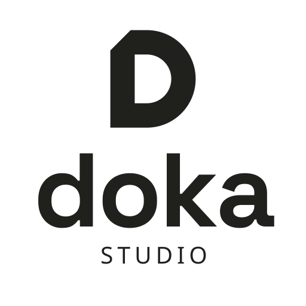
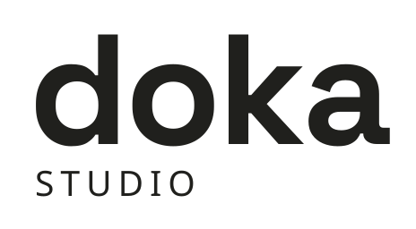
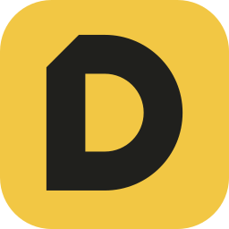
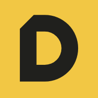

Le studio qui met vos produits en valeur.
Vos produits
au premier plan.
Une identité franche.
Un D au coin coupé.
La place aux commerçants.
Un logo. Les bons formats.
Fichiers & vérifications ↗
02 / Sur fond sombre
03 / Empilé
04 / Nom seulDu jaune. Du caractère. De l’espace.
Palette exacte / RGBSignal Yellow#F2C744 / 242 · 199 · 68
Charcoal#20201D / 32 · 32 · 29
Warm Paper#F5F1E8 / 245 · 241 · 232
Une voix claire, jusque dans les détails.
Space Grotesk Bold / titres
Une photo produit.
Votre prochaine affiche.
Noto Sans / texte & interface
Ajoutez votre photo. Décrivez votre affiche.
Choisissez le résultat qui vous ressemble.
Des phrases courtes, des actions précises, toujours « vous ». Une identité de service qui laisse chaque commerce exprimer la sienne.
Le D / icônes & petits formats



Le D seul pour les onglets et les avatars.
Pas de petit texte dans l’icône.


Charbon sur jaune : 10,13:1.
Charbon sur papier : 14,49:1.